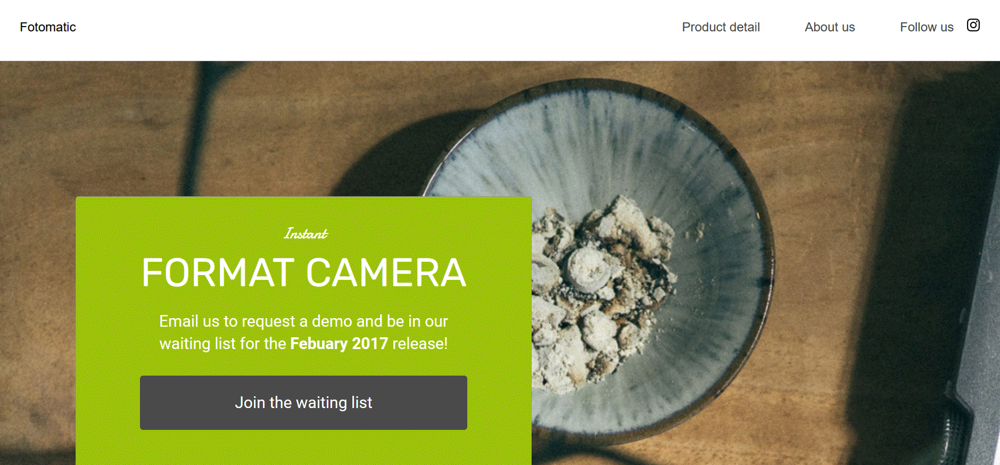
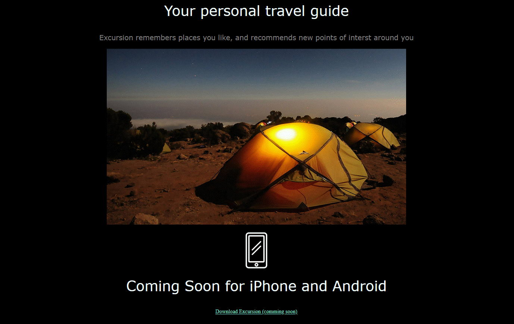

About Me
Hello... I'm Patrick. A developer by passion. Chiefly known for not so much, but soon will be be spoken of across the universe. I have an interesting combining business ideas with statistical and acturial thories to produce the best software solutions.
In my free time, I like to read about the latest develoment in science and technology. I like traveling, swimming and gaming. I try to always figure out how the game developers went about every single step in the life cycle of the game.
Fun fact! I keep getting better every second. Personal Upgrade .
So the primary purpose of this page is to introduce myself to the world and make everyone aware of my progress so far. On this page, you would find a briefings. The detailed page containing all projects and decriptions is still under construction......
DISCLAIMER: MOST OF THESE PROJECT WERE ONLY MENT TO DISPLAY BASIC 'FRONT-END SKILLS'. HENCE THEY MOSTLY GIVE INFORMATION. A FEW INTERACTIONS AND RESPONSIVENESS MAY BE ENCOUNTED, BUT AS AT THE TIME THEY WERE BEING BUILT, THE INTENTION WASN'T TO PRODUCE A PERFECT REAL WORLD PROJECT. HENCE, THEY DO NOT DISPLAY MY EXHAUSTIVE ABILITIES.
Projects
Sample Company Home Page

Date: 24/02/22
Description: This page is a home page of a food company. I built it for daddys foods as my very first real life project. Many other additional features can be added to it. As the days go by, it's being updated and the latest technologies are added.
Technologies: CSS, HTML
HOMEFotomatic
Date: 22/02/22
Description: Fotomatic is actually a debugging assignment. The page was totally raw and I had to update it with styling.
Technologies: CSS, HTML
HOMEExcursion Webpage
